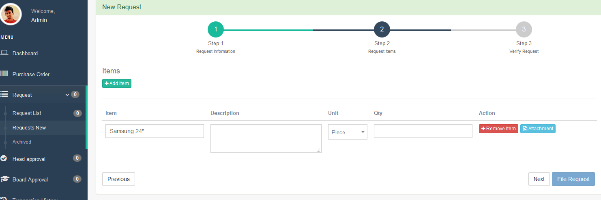
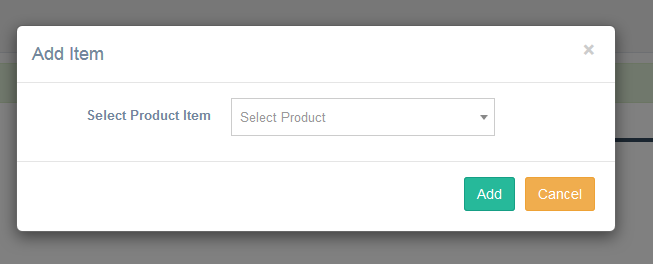
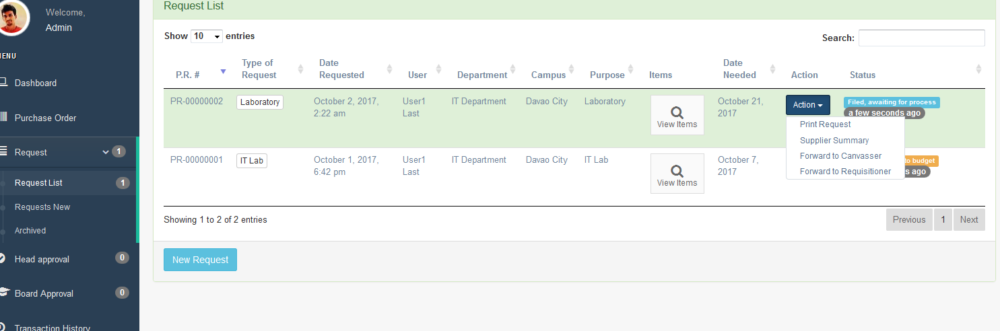
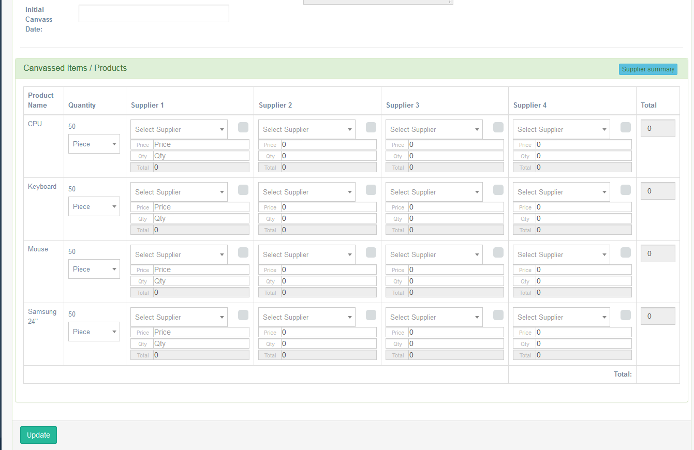
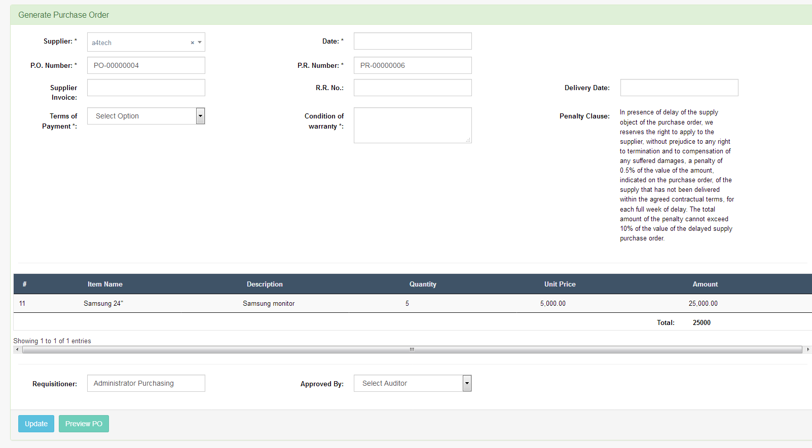
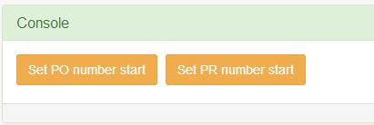

The Process
Flow Chart
System Flow Description
User of this system may request for any items needed with the approval of their Department Head. After submission, a Purchase Request number will be generated that will go through several process. Once approved by the respective head department, admin will assign the generated purchase request to the canvasser for necessary canvassing. Once canvassed and no other concern needed from the user, canvasser will forward it back to admin for endorsement to budget, who approves amount presented. Depending on the company's set policy on the purchasing process, there may be an amount set that needs to go through higher approval. And so the sysytem is designed to standardized it and review is required to generate a PO for this kind of transaction.
A purchase order will be generated after it passes through the budget approval. At this point, necessary accounting entries will be formulated once audited by the auditing user. This is almost the end point of the process because once admin receives all necessary approval and endorsement of the generated P.O., it will just then be awaiting delivery for the property user to account accuracy of order processed.
Every data entered in the system will be recorded and reports can easily be printed if needed. Email notifications each user will be activated and status of each step taken will be accounted for necessary monitoring and order execution.
Setting up the system
Above all else, a set-up is needed to configure the system thus proceed to Settings Menu. You need to add first Department and Branches settings before adding a user’s. You also need to add the product Category before adding the Products.
General Settings
General settings page where you can set the Company Profile, Purchase Order, Print Request, Miscellaneous and the Dashboard.
Email Messages
The Email Messages page where you can set the content of the emails on every process. Once you click the “Edit” button, there you can see the content of the email on that process. Please fill out the “Subject” and the “Message” Content. There are default emails that have been stored for each action item result, but these can be edited anytime necessary. There are shortcodes that you need know to make it dynamic. See shortcodes below.
Shortcodes- - The name of the sender
- - The email of the sender
- - The Name of the recipient
- - The Email of the recipient
- - Purchase request number
- - Purchase request name/type
- - Purchase request date needed
- - Message of the sender
- - Purchase order number
- - Purchase order number
- - Item ID number
- - Item name
Users
Users page where you can add, edit, deactivate and change the password of the users. Before adding a user, please make sure that the Branch and The Department has been set up already.
Please create at least one user on each 7 user type before using the system and atleast 1 department head on each department you created.
- User Type:
There are 7 kind of user type on this system enumerated below.
-
Administrator
The administrator of this system who has the overall access of the purchasing process.
- General User
The User or the employee of the company.
- Canvasser
The canvasser is member of the purchasing department who is responsible for canvassing of the products or items requested.
- Budget
The budget is the user type who approves the budget set on the request
- Auditor
The role of this user is to audit and verify the Purchase Order.
- Board
Board is a special type of user who is only being notified for instances when its approval is highly needed. This is normally for requests of a much greater amount of budget. The board also has the ability to execute most of whatever an administrator user can.
- Property Department
This User type is the one who handles the receipt of the orders and in-charge of the inventory of the products or items once delivered by the supplier.
-
Administrator
- Branch
This is selected as to which branch the user-type is.
- Department
This is selected as to which department the user-type is
- Department Head
This is opted to be checked in the tickbock section if the user added is the head of the department or responsible to approve requests on the said area.
- First name
First name of the person or user.
- Last Name
The Last name of the person or user.
- Phone
Contact number of the user
- Email
Email address of the user.
- Password
Enter the desired password that you wanted for that particular user to use. You need to click the “activate” button after you add the user. However, user can also create their own password because after adding the user, an email confirmation will be sent to the user with the credentials created and for them to have the option to create a new password of their own.
User Group
User group has only currently seven (7) user types comprising the purchasing process. You can only edit the description on this selection. The description will appear when you edit the user-type.
Department
This page where you can add, edit and delete the User department. This will also appear when you add a user so this need to setup first before adding the user.
Branches
This page where you can add, edit and delete the branches of the company. This will appear also when you add a user to determine the branch such user is assigned to. This will be configured first before adding the users of this branch.
Supplier
This page where you can add, edit and delete the supplier. The supplier list can be visible in the canvasser page where they can select the preferred supplier for the requested products. Canvasser can enter a supplier that is not yet added on the list as another way to inform the admin of the information for the prospected list of suppliers.
Products
Admin can also add the common products here so that the requisitioner can only select the product they want to request. If the product does not exists yet in the system, a custom product can be entered or created.
Product Category
Admin can add a product category on this page. The category has second level-sub category that can be viewed or created. This will also be set up first before adding a product because this will appear when a product is added.
Request Category
Request category is for admin use to identify where the request is being categorized. This will appear when the admin assign the request to the canvasser.
Purchase Order
You can view in this page all the generated purchase orders. The “Update” button will be disabled once it is already approved by the Auditor
Request New
Creating a new request can be done by any of the user type. Creating a new request has a 3 steps.
-
- Request Type – Type or Name of your request
- Purpose – Purpose of your request
- Date Needed - The date when the request is needed.
-
- Click “Add Item” button. See Figure 1.0
- Select and search the product you want. Products can be added in the settings. If the user unable to locate the product on the list, user can simply type the product and click or hit enter. See figure 1.1
- Click the “Add” button. See figure 1.1
- Input the product description and the quantity.
- A “remove item” button is visible for your option to be removed if needed. See figure 1.0.
- An “attachment” button is visible if you want to add an attachment necessary for the product or item requested. The files accepted are “gif,jpg,png,zip,zipx,rar,7z,pdf,doc,docx,txt,odt”. See figure 1.0
- Attachment window where you can upload, remove, and download the attachment. See figure 1.2
- Click next when you’re done.
-
Preview of your request. Click File Request when you’re done. You can click “Previous” button when you forgot something. The request will be automatically forwarded to head of your department.
Figure 1.0 – Step 2
Figure 1.1 – Add item window
Figure 1.2 – Attachment window

Head Approval
Once Request received by the head approval, the head will then click the “Recommending approval” button under action column then you will be redirected to recommending approval page. See figure 2.0
- Assigning item to head users – You can assigned any of the items to any of the head department if necessary. If not, you can just assigned it you yourself. Just select the Head user from the left side section then select the item(s) in the middle section you want to assign to the selected user then click the “assign” button. The assign items now available in the right side portion. See figure 2.0.
- Deleting assigned head user – If you have assigned it to the wrong head user, you can also delete it. Just select the head user at the left side portion then click the “Delete as Approving Officer”
- Review each items – After assigning to the head users, you can click the “back” button to go back to the list of head approval request.
- Approving and Denying Items – Click the “View Items” button to view the items that is assigned to you. See figure 3.1. You can also see the items that is assigned to the other head (see Assigned To column). ). You can only approve and deny items that were assigned to you. Whether approved or denied, it will notify the requisitioner of your action taken. There will be times that requisitioner will response to it and you will be able to view it on the Requisitioner Note column. All items should be approved by all the recommending officer before it will be forwarded to the admin for the next steps process.
Figure 2.0 – Recommending Approval Page

- List of all Head department Users
- List of items which you can check if you assigned it to the selected head user.
- List of selected items of the selected user
Figure 2.1 – Head Approval Item Window

Admin Assign to Canvasser
Once approved by the Head/Recommending Officer, the admin can now forward it to requisitioner if they have clarification or forward it to Canvasser if it is good to go. See figure 3.0. When you forward it to canvasser, the popup window ask you the request category and the canvasser you want it to assign.
Figure 3.0 – Request list
Canvasser
- Update items
Once it is forwarded to canvasser, the canvasser click the “update items” in the action button to update the items they canvassed and it will be redirected to the “Product / Items” page. See figure 4.0
This is the canvassing system, where the canvasser can input up to 4 supplier on each item. Canvasser can put different price on each supplier and so as the quantity.
Each supplier per item has a checkbox. If you tick that box, that means that is your final selection and the total will be automatically computed
The supplier which the canvasser not checked, it will be also included in the print requisition form but it will not total the amount. This purpose only to check for the admin review.
Once you click the update button, you can view the total per supplier by clicking the Supplier Summary button at the top right corner. You can now go back to request assigned list page.
- Print Request – Print the final canvassed items
- Supplier Summary – View the total amount per supplier
- Forward to Admin – Once your canvass done, you can now forward to admin
- Return to Requisitioner – Return the request to requisitioner if there is clarification
Figure 4.0 – Products/Items
Admin Assign to Budget
- Print Request – Admin can print the final request items selected by the canvasser.
- Supplier Summary – View the total amount per supplier
- Assign to Budget – Admin will assign the request to budget if it is good to proceed.
- Return to Canvasser – Admin can return the request to canvasser if clarification is needed.
Budget
- Print Request – Budget can print the final request items selected by the canvasser.
- View Message – View message/note from admin
- Approve – Approve the request. If the total amount is greater than the limit of the budget, it will automatically forwarded to the board for approval
- Deny – Deny a request (return to requisitioner).
Board
- Print Request – Print the final item request
- Approve – Approve the request
- Deny – Deny a request (return to requisitioner)
Admin - Generate PO
-
When the budget or board approved the request, the admin now can generate PO. Just click the “Generate PO” button under the Action button of the corresponding row of the request.
Generate PO Page – After clicking the “Generate PO” button, it will be redirected to the page where you can generate the PO on each supplier. See figure 5.0
Each supplier will generate purchase order. After selecting the Supplier which you want to generate the PO. Please fill up the required fields then click update. The PO will then be forwarded to the selected VP Administrator & Accounting in the Approved by field.
You can enter manually the PO number and PR number. Once you decided to start the auto increment in the certain number, just go to www.yourdomain.com/settings/console/ . See figure 5.1. You can set the number of PO and PR where you want to start.
-
Partially Done – Admin can click the “Partially Done” button. If the VP Administration & Accounting approve the PO, all the Items approved, will appear in the window. See figure 5.2. After clicking the “Done” button, it will now appear in the property and waiting when it is delivered
Figure 5.0 – Generate PO
Figure 5.1 – Console
Figure 5.2 – Auditor approved items

Auditor
Approve the purchase order generated.
Property
Request Done – It shows all the PO currently on delivery. They can received the items when it is delivered.